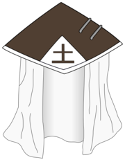

O Tsuchikage (土影; Literalmente significa "Sombra da Terra") é o Kage de Iwagakure, um título concedido a líder da aldeia. Houveram quatro Tsuchikage até agora e são geralmente considerados como os shinobi mais fortes na história da aldeia.
A posição Tsuchikage foi criado logo após a formação de Iwagakure por Ishikawa, o fundador da aldeia, sendo no anime o terceiro dos Cinco Kage a surgir.[1] A maneira pela qual um candidato ao cargo é escolhido é desconhecido, mas apesar disso, três dos quatro Tsuchikage da aldeia são ligados pela mesma família: o Primeiro era avô do Terceiro e a Quarta fora neta do Terceiro além de descendente do Primeiro. Embora não é claro se o Segundo era parente do Primeiro, ele fora seu guarda-costas pessoal e professor do Terceiro.
Os Tsuchikage são conhecidos pela realização de verdadeira autoridade, tendo o seus shinobi obedecendo todos os comandos sem hesitação.[2] Com o tempo, devido aos governos do Segundo e Terceiro Tsuchikages empregarem táticas desleais como tomar vantagem de alianças, mesmo em tempos de paz, fizeram com que o posto e sua vila ganhassem uma reputação ruim entre as outras aldeias.[3][4] Não fora até a época da Quarta Guerra Mundial Shinobi e posteriormente que a infâmia tanto do cargo quando do vilarejo iriam se findar.
O edifício do Tsuchikage é o mais alto de Iwagakure que é feito de pedra e tem um telhado em forma de cone, possuindo também o kanji Tsuchi (土; Literalmente significa "Terra") sobre ele.
Ishikawa (イシカワ, Ishikawa) foi o Primeiro Tsuchikage (初代土影, Shodai Tsuchikage; Literalmente significa "Primeira ou Fundadora Sombra da Terra") que fundou Iwagakure no País da Terra. No anime, ele foi indicado como sendo um membro do Clã Kamizuru.
Mū (無, Mū), renomado como Indivíduo Nulo (無人, Mujin, Viz: "Homem Invisível") foi o Segundo Tsuchikage (二代目土影, Nidaime Tsuchikage; Literalmente significa "Segunda Sombra da Terra") de Iwagakure.
Ōnoki (オオノキ, Ōnoki; Viz "Ohnoki"), conhecido como "Ōnoki das Escalas Ambas" (両天秤のオオノキ, Ryōtenbin no Ōnoki) foi o Terceiro Tsuchikage (三代目土影, Sandaime Tsuchikage; Literalmente significa "Terceira Sombra da Terra")[6] de Iwagakure.
Kurotsuchi (黒ツチ, Kurotsuchi) é uma kunoichi de Iwagakure, neta do Terceiro Tsuchikage e uma descendente do Primeiro Tsuchikage. Ela viria a seguir os passos de sua familia, assumindo o manto como a Quarta Tsuchikage (四代目土影, Yondaime Tsuchikage; Literalmente significa "Quarta Sombra da Terra").